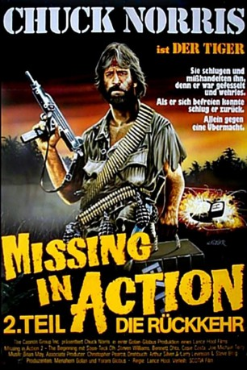

#3615 Missing in Action 2 - Die Rückkehr
Alternativ: Missing in Action 2: The Beginning
 
 IMDB-Wertung: 5.2 / 10
IMDB-Wertung: 5.2 / 10  Metascore: 0
Metascore: 0 
Der zweite Teil der Kriegsaction mit Chuck Norris ist anders als der deutsche Titel vermuten lässt keine Fortsetzung, sondern ein Prequel. In Vietnam verbringen Braddock und seine Männer zehn Jahre in Kriegsgefangenschaft, wo sie vom sadistischen Kommandant Yin aufs Übelste gefoltert werden. Braddock kann fliehen, kommt aber als "Ein-Mann-Armee" zurück, um seine Mannen zu befreien und abzurechnen.
Jahr: 1985
Dauer: 91 Minuten
FSK: 18
Land: USA Studio: Cannon Film DistributorsTonspuren: DD5.1 - ,
Untertitel:
Auflösung: 1080p (1920x1040) Größe: 5969 MB
Genre: Action, Thriller, Drama, Krieg
Regisseur: Lance Hool
Drehbuch: Paddy Considine
Soundtrack:
Darsteller:
Datei: X:\Person\Chuck Norris\Missing in Action 2 - Die Rückkehr (1985, FSK18, 1920x1040).mkv seit 10.05.2016
Festplatte: HD Collection-7+mehr(A-Z)+Person
 Es gibt insgesamt 17 Filme in der Gruppe 'Person\Chuck Norris'
Es gibt insgesamt 17 Filme in der Gruppe 'Person\Chuck Norris'